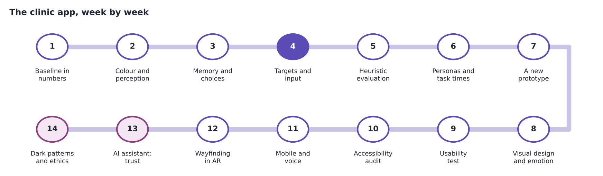
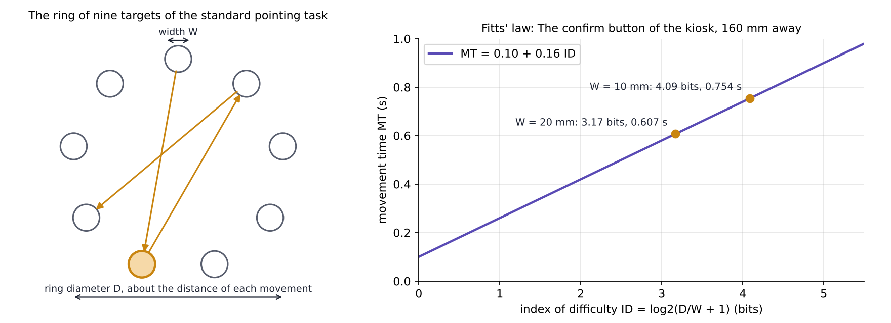
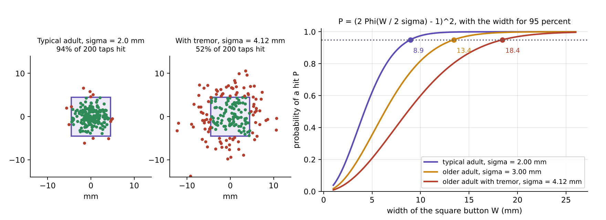
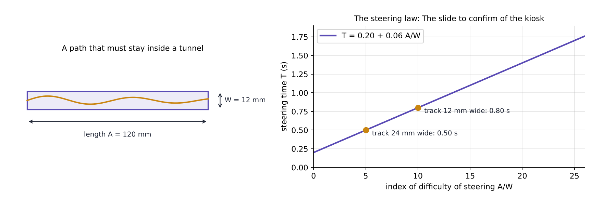
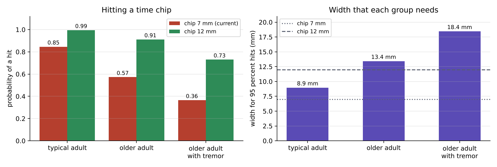

Overview
Week 3 asked what patients find, remember and choose. This week asks how they reach it: A finger or a pointer moves to a target and must land on it. Movement is fast but imprecise, and speed and precision pull against each other. Fitts' law turns this trade-off into a formula: The time grows with the distance and shrinks with the width of the target. The spread of the taps gives the effective width and the throughput of a person or a device. Touch adds the size of the finger, and a tremor adds a swing that many patients of a hospital have. The steering law covers paths that must stay inside a tunnel, such as cascading menus and sliders. The Python step fits straight lines by least squares, the tool behind all three laws. The clinic app reaches stage 4, targets that fit fingers, tremor and the kiosk. The week closes with keyboards whose artificial intelligence (AI) enlarges the keys that it expects.
Week at a glance
flowchart LR A["Aimed movements"] --> B["Fitts' law"] B --> C["Effective width and throughput"] C --> D["Touch, fingers and tremor"] D --> E["The steering law"] E --> F["Interface clinic"] F --> G["The human side"] G --> S["The clinic app, stage 4"] S --> H["Toward human-AI interaction"]
Every method on this page is also written as Python code in the Colab notebook of the week. Its code is divided into numbered sections. Each orange box on this page names the section whose code carries out what the text above the box explains. The box says what to run and what to look at in that section, and its button opens the Colab notebook at that place. The games, the practice parts and the self-assessment of the week are in the interactive lab. Each violet box opens one part of the interactive lab. The part ends with a link back to its box on this page, and the Colab notebook is always opened from the orange boxes here.
Python step 4: Least squares and residuals
Python code in the Colab notebook, right after Section 0 (setup). Open the Colab notebook and run this step cell by cell: It consists of short pieces of Python code with their explanations, a quick check and three exercises. Topics: A line by hand · Residuals and the coefficient of determination · The spread of tap positions · Plotting a fit with its residuals.
The step continues with Python [1] and NumPy [2]. It computes the slope and the intercept of a least-squares line by hand and checks them against np.polyfit. It measures the residuals and the coefficient of determination of the line. Finally, it simulates the landing points of taps and summarises their spread, the quantity behind the effective width. Students who have never programmed start with the start-here notebook of the course.
Week 1 measured the booking flow, and Week 2 audited colours, contrast and text size. Week 3 compared three menus of departments: The split menu is the fastest for patients and the nurse. The patient number should come from the card.
This week measures the targets themselves. Stage 4 computes how often three groups of patients hit the time chips, how wide the chips must be and how the kiosk should confirm a booking.

Aimed movements and the speed-accuracy trade-off
Every tap is an aimed movement: The hand accelerates toward the target, slows down and lands. A fast movement covers the distance quickly but lands with a larger error. The faster people move, the less precisely they land, and this speed-accuracy trade-off is why small and distant targets take longer.
Crossman and Goodeve explained the trade-off with feedback [3]. In their account, a movement is a series of submovements, and each one corrects part of the remaining error. Suppose that each submovement takes the same time and leaves a constant share of the remaining distance. Then the number of submovements grows with the logarithm of the distance divided by the tolerance:
\(D\) is the distance to the centre of the target and \(W\) its width, so the movement may end within \(W/2\) of the centre. The share of the remaining distance that each submovement leaves is \(\varepsilon\), and the brackets round up to a whole number.
A worked example. With \(D = 160\) mm, \(W = 20\) mm and \(\varepsilon = 0.2\), the numerator is \(\log_2(2 \times 160/20) \)\({}= \log_2 16 \)\({}= 4\) and the denominator is \(\log_2 5 = 2.32\). So \(4/2.32 = 1.72\), rounded up to \(k = 2\) submovements. Halving the width to 10 mm gives \(\log_2 32 = 5\) and \(5/2.32 = 2.16\), so \(k = 3\).
Later research refined this account, but its message holds: Each halving of the target adds about the same amount of work. The animation below shows the submovements.
Animation. A movement of the hand toward a target as a series of submovements. Each one covers four fifths of the remaining distance and takes 0.15 s. The sliders set the distance and the width of the target, and Play shows the movement and its position over time. The number of submovements grows by about one for every 2.3 halvings of the width.
Check your understanding. In the model of corrections, what happens to the number of submovements when the target becomes half as wide?
Fitts' law
Fitts measured how fast people tapped alternately between two metal plates of a given width at a given distance [4]. The movement time (MT) grew with the index of difficulty (ID), the logarithm of the ratio of distance to width. MacKenzie introduced the form now used in human-computer interaction (HCI), which never becomes negative [5]:
\(D\) is the distance to the target and \(W\) its width, both in the same unit, so their ratio has no unit. \(ID\) is measured in bits and \(MT\) in seconds. The constants \(a\) and \(b\) depend on the person, the device and the task, and a line fitted to measured times gives them.
→ This formula with numbers, step by step: Lab Part A, calculator, steps 1 to 5.
A worked example. The confirm button of the kiosk is 20 mm wide and 160 mm from the last button pressed. Then \(D/W = 160/20 = 8\) and \(ID = \log_2 9 = 3.17\) bits, the information of a choice among eight options in Week 3. With \(a = 0.10\) s and \(b = 0.16\) s per bit, \(MT \)\({}= 0.10 \)\({}+ 0.16 \times 3.17 \)\({}= 0.10 \)\({}+ 0.507 \)\({}= 0.607\) s. A button half as wide gives \(\log_2 17 = 4.09\) bits and \(MT = 0.10 + 0.654 = 0.754\) s.

The law describes pointing with the mouse, the finger and a pen, and HCI research has used it to compare pointing devices for decades [5]. It also explains familiar rules of design. Large targets are fast, and so are near ones. A target at the edge of a screen is fast for a mouse, because the pointer stops at the edge, which makes the target practically endless in depth.
Check your understanding. With \(a = 0.10\) s and \(b = 0.16\) s per bit, how long does a movement of 90 mm to a target 30 mm wide take?
- Find the smallest target that you tap every day. How far is it from where your thumb rests?
- Why are the most important buttons of many phone apps at the bottom of the screen?
- A menu that opens at the pointer puts every item close to it. What does it cost in exchange?
Part A of the interactive lab first repeats this calculation step by step. Then it measures your own law: The kiosk of the 3D lobby shows rings of nine targets, and you tap them for six combinations of distance and width. Section 1 of the Colab notebook fits your constants.
Interactive lab, Part A. Tap the ring in 3D: The calculator of this section and six rings of nine targets on the kiosk, from easy to hard. The results can be copied into the Colab notebook.
Python code in the Colab notebook, Section 1. Open Section 1 of the Colab notebook and run it. The functions fitts_id and fitts_time carry out the formulas of this section and are checked on the worked example. Paste the results of Part A into MY_TAPS, and the code averages the times of each combination. It fits \(a\) and \(b\) with np.polyfit, reports \(R^2\) and draws the line.
Effective width and throughput
People rarely aim exactly as instructed. Some tap carefully and hit nearly every time, while others hurry and miss more often. Two people can then have equal times for different reasons. The effective width corrects for this: It replaces the nominal width \(W\) with the width that the taps actually used [6].
Let the landing points spread along the direction of movement with the standard deviation \(\sigma\). The effective width, the effective index of difficulty and the throughput (TP) are then
The factor 4.133 makes \(W_e\) the width that holds 96 percent of normally distributed landing points. A person who misses 4 percent of the time therefore has \(W_e = W\). \(D_e\) is the mean distance actually moved, \(MT\) the mean movement time and \(TP\) the throughput in bits per second. Soukoreff and MacKenzie recommend computing it for each condition, averaging per person and then over people [6].
A worked example. A patient taps a target 20 mm wide at \(D_e = 160\) mm, with landing points spread by \(\sigma = 3.2\) mm and a mean time of 0.64 s. Then \(W_e = 4.133 \times 3.2 = 13.23\) mm, narrower than the target, so the patient was more careful than necessary. \(ID_e \)\({}= \log_2(160/13.23 + 1) \)\({}= \log_2(12.09 + 1) \)\({}= \log_2 13.09 \)\({}= 3.71\) bits, and \(TP = 3.71/0.64 = 5.80\) bits per second.
Throughput combines speed and accuracy in one number. It therefore compares people and devices more fairly than time alone, which rewards those who accept more misses.
Check your understanding. A participant has \(W_e = 30\) mm on a target 20 mm wide. What does this mean?
Python code in the Colab notebook, Section 2. Open Section 2 of the Colab notebook and run it. The function throughput computes the effective width, the effective index of difficulty and the throughput of one condition, after a check on the worked example. The code computes them for every condition of the taps of Section 1 and averages the throughput per student and over the class.
Touch, fingers and tremor
A finger is a wide and soft pointer. It hides the target it aims at, and its contact area spreads over several millimetres. Bi, Li and Zhai described the landing points of touch as the sum of two independent normal distributions [7]. One follows the speed-accuracy trade-off, and the other is the absolute imprecision of the finger, which remains even when people move slowly.
Spreads from independent sources add as variances, not as standard deviations. The same rule applies to tremor, a rhythmical, involuntary oscillation of a body part [8]. The consensus statement of the Movement Disorder Society distinguishes tremor at rest from tremor during action, including intention tremor during movements toward a target [8].
A sinusoidal swing of amplitude \(A\), caught at a random moment, has a standard deviation of \(A/\sqrt{2}\). With a steady spread \(\sigma_0\) and a tremor of amplitude \(A\), the spread of the taps is
A tap lands within a width \(W\) around the centre with a probability that follows from the normal distribution. On a square button, the tap must stay within the width in both directions, so the two probabilities multiply:
\(\Phi\) is the cumulative standard normal distribution, the share of values below a given number of standard deviations. \(P_1\) is the probability of landing within the width in one direction, and \(P\) the probability of hitting the square button.
→ These formulas with numbers, step by step: Lab Part B, calculator, steps 1 to 5.
A worked example. A typical adult taps with \(\sigma = 2.0\) mm on a button 9 mm wide. Then \(W/(2\sigma) = 9/4.0 = 2.25\), \(\Phi(2.25) = 0.9878\) and \(P_1 = 2 \times 0.9878 - 1 = 0.9756\), so \(P = 0.9756^2 = 0.952\). An older patient with \(\sigma_0 = 3.0\) mm and a tremor of \(A = 4\) mm has \(\sigma \)\({}= \sqrt{9 + 16/2} \)\({}= \sqrt{17} \)\({}= 4.12\) mm. Then \(9/8.24 = 1.09\), \(\Phi(1.09) = 0.8621\), \(P_1 = 0.7242\) and \(P = 0.524\): Nearly every second tap misses.
Solving for \(W\) gives the width that a group needs. A hit rate of 95 percent on a square button requires \(P_1 = \sqrt{0.95} = 0.9747\), which the normal distribution reaches at \(W = 4.47\,\sigma\). That is 8.9 mm for the typical adult and 18.4 mm for the patient with tremor. Parhi, Karlson and Bederson recommended 9.2 mm for single targets tapped with the thumb [9], close to the first value.

Scene: Where the taps land. A patient taps one time chip on the kiosk forty times. The dots show where the taps land: Green on the chosen time, orange on a neighbouring time and grey in a gap. The inset magnifies the chips. The first row of buttons sets the width of the chips and the second the group of patients, with the spreads of this section. The view buttons on the right switch between the screen and the hall. Drag the scene to look around.
Check your understanding. Why does a tremor of amplitude 4 mm add only \(16/2 = 8\ \mathrm{mm}^2\) to the variance of the taps?
- Which situations make anyone's taps less precise, such as walking, cold hands or a child on one arm?
- A miss that lands in a gap does nothing, while a miss on a neighbouring button does something else. Which is worse, and why?
- Should an app ask about a tremor to enlarge its buttons, or simply make them large for everyone?
Interactive lab, Part B. The two formulas of this section step by step: The spread of the taps with a tremor and the probability of hitting a square button, with three presets.
Part C of the interactive lab gives your pointer a tremor of 4 mm. The pharmacy kiosk shows square buttons from 6 to 20 mm, and you tap them once with a steady pointer and once with the tremor.
Interactive lab, Part C. Tremor at the kiosk in 3D: Forty buttons from 6 to 20 mm, with a steady pointer and with a simulated tremor. The results can be copied into the Colab notebook.
Python code in the Colab notebook, Section 3. Open Section 3 of the Colab notebook and run it. The functions sigma_total and p_hit carry out the formulas of this section and are checked on the worked example. Paste the results of Part C into MY_TREMOR, and the code estimates the spread of your taps with and without tremor. A figure compares the observed hit rates with the model, and width_for finds the width for 95 percent.
The steering law
Some movements must stay inside a path from start to end: Moving through a cascading menu, dragging along a slider or writing a signature on a screen. Accot and Zhai derived the steering law for such tunnels [10]. For a straight tunnel of length \(A\) and width \(W\), the time is
The ratio \(A/W\) is the index of difficulty of steering, and \(a\) and \(b\) are fitted like the constants of Fitts' law. The index grows linearly, not logarithmically, so a narrow path costs far more than a small target. Doubling the length or halving the width doubles \(A/W\).
A worked example. The kiosk asks patients to confirm a booking by sliding a knob along a track 120 mm long and 12 mm wide. With \(a = 0.20\) s and \(b = 0.06\) s, \(A/W = 120/12 = 10\) and \(T = 0.20 + 0.06 \times 10 = 0.80\) s. A track 24 mm wide gives \(A/W = 5\) and \(T = 0.50\) s. A patient with a tremor of 4 mm swings across 8 of the 12 mm, which leaves 2 mm on each side for any other deviation.

Check your understanding. A tunnel becomes twice as long and twice as wide. What does the steering law predict?
- Where on your devices must you steer, for example in menus that open on hovering or in sliders?
- Phones once offered a slide to unlock. Why might a design choose steering on purpose?
Part D of the interactive lab is a buzz wire. You steer through six straight tunnels of different lengths and widths without touching the rails.
Interactive lab, Part D. Buzz wire in 3D: Twelve runs through tunnels from 10 to 40 mm wide. The results can be copied into the Colab notebook.
Python code in the Colab notebook, Section 4. Open Section 4 of the Colab notebook and run it. The function steer_time carries out the formula of this section and is checked on the worked example. Paste the results of Part D into MY_TUNNELS, and the code fits \(a\) and \(b\) of the steering law. The Explore panel draws a tunnel and compares steering with tapping a target of the same width.
Interface clinic: Targets on the clinic screens, before and after
The four pairs below show screens of the clinic app before and after a redesign. Each pair names the law of movement that the redesign respects.
Interface clinic: Choosing a time. The screen where the patient picks a time for the appointment.
BeforeSmall chips in a dense grid
The chips are 7 mm wide with gaps of 1 mm. A patient with tremor hits the intended time in about one tap of three, and most misses book a neighbouring time.
AfterLarger chips, half a day at a time
Chips of 12 mm with clear gaps are hit about three times in four even with tremor. A summary screen then shows the time once more before anything is booked.
Interface clinic: Confirming at the kiosk. The last step of a booking at the kiosk.
BeforeSlide to confirm
The slide is a steering task with a ratio of length to width of 10. A patient with tremor leaves the narrow track and must start again.
AfterA large button and a way back
A tap on a 25 mm button takes about 0.56 s and is hit with a probability of 0.995 even with tremor. The undo replaces the protection that the slide offered.
Interface clinic: The department menu at the front desk. The menu of the booking software that the nurse uses with a mouse.
BeforeA submenu that opens on hovering
Reaching the submenu is a steering task through an item 5 mm high. A slightly diagonal path closes the submenu, and the nurse starts again.
AfterA panel that opens on a click
A click opens a wide panel that stays open until the next click. The move becomes a Fitts task to a large item, and nothing closes on the way.
Interface clinic: Cancel next to confirm. The screen of an existing appointment.
BeforeEqual buttons side by side
A miss on Confirm lands on Cancel. The cost of a slip is then not a second tap but a lost appointment.
AfterThe frequent action large, the rare one apart
The frequent action is large and alone, and the rare destructive one is far away and asks once more. A miss now does no harm.
- Which of the four screens marked Before would fail first for a patient with tremor, and why?
- Larger targets need more space. Which content of the time screen could move to a second screen?
- Which redesign also helps the nurse at the front desk, who uses a mouse?
The human side: Age, illness and the situation
Hertzum and Hornbæk compared young (12 to 14 years), adult (25 to 33 years) and elderly (61 to 69 years) participants pointing with a mouse and a touchpad [11]. The adults performed best: They made fewer errors than the young participants and were faster than the elderly ones. The touchpad slowed every group, and the elderly participants most.
A hospital adds its own conditions. Pain, medication, a drip in one arm or a bandaged hand all widen the spread of the taps. Many limits are also situational: A parent holding a child taps with one thumb, and a patient in a cold corridor taps with stiff fingers. A target that works in the weakest situation works for everyone.
Lift buttons are large, spaced apart and within reach, because everyone uses a lift: Children, older people and people carrying bags. Nobody finds them too large, and the same holds for generous buttons on a screen.
- Think of the moment when you were least precise with your phone. What would the app have needed to work then?
- Which settings could let patients enlarge targets themselves, and who would find them?
The clinic app, stage 4: Targets that fit fingers, tremor and the kiosk
The formulas of this week now compare the targets of the clinic app for three groups of patients. The first table gives the probability of hitting a square time chip, with the spreads of the lecture.
| Group of patients | Spread | Chip 7 mm (current) | Chip 12 mm |
|---|---|---|---|
| Typical adult | 2.00 mm | 0.846 | 0.995 |
| Older adult | 3.00 mm | 0.573 | 0.911 |
| Older adult with tremor | 4.12 mm | 0.365 | 0.730 |
The current chips fail an older patient in four taps of ten and a patient with tremor in nearly two of three. Chips of 12 mm need more room, so the redesign shows one half of the day at a time. The second table compares the two ways of confirming a booking at the kiosk.
| Way to confirm | Index of difficulty | Time | With a tremor of 4 mm |
|---|---|---|---|
| Slide along a track of 120 by 12 mm (current) | A/W = 10 | 0.80 s | Swings across 8 of the 12 mm |
| Button 25 mm wide, 160 mm away | ID = 2.89 bits | 0.56 s | Hit with probability 0.995 |
The button is faster and safe with a tremor. The slide protected against a confirmation by accident, so an undo screen of ten seconds takes over that role.

| Question of stage 4 | Answer of the audit | Where |
|---|---|---|
| How often do patients hit the time chips? | 0.85, 0.57 and 0.36 at 7 mm | Section 5 |
| How wide must the chips be? | 8.9, 13.4 and 18.4 mm for 95 percent | Section 5 |
| Slide or button at the kiosk? | Button: 0.56 s instead of 0.80 s | Section 5 |
Stage 4 gives the redesign three targets: Chips of at least 12 mm, a large confirm button with an undo, and menus that open on a click. Week 7 builds them into a prototype, and Week 10 checks them against the accessibility guidelines [12].
Check your understanding. Why does the stage choose chips of 12 mm, although a patient with tremor needs 18.4 mm for 95 percent?
Interactive lab, Part E. The keypad for the personal identification number (PIN) at the payment kiosk: Its index of difficulty, its time and its hit rate with a tremor, by hand.
Python code in the Colab notebook, Section 5. Open Section 5 of the Colab notebook and run it. The code collects the results of stage 4 in the dictionary STAGE4. It holds the hit rates of the chips for three groups, the widths for 95 percent and the times of the slide and the button. A figure draws the two panels of the figure above.
Your application
The same formulas apply to the targets of any app. The Colab notebook holds an application switch with four further apps: Online banking, an e-government service, food delivery and course registration at a university. Choose one and find out which of its targets fails older users.
Python code in the Colab notebook, Section 6. Open Section 6 of the Colab notebook, set APP to one of the five names in the comment and run the cell. The code computes the time and the hit rate of the smallest target of the app for the three groups of patients. It prints the width that each group needs for 95 percent.
Toward human-AI interaction
Soft keyboards on phones use a language model to guess the next letter and quietly enlarge the touch area of likely keys. Gunawardana, Paek and Meek showed that overly aggressive resizing can prevent users from typing the text they want [13]. They proposed anchored key targets: Every key keeps a minimum area of its own, which reduced keystroke errors in their evaluation.
The same tension appears whenever an AI adapts targets. A prediction makes the expected choice easier and the unexpected one harder, and the person cannot see where the boundaries moved. Good adaptive targets therefore keep a guaranteed minimum for every option. Weeks 13 and 14 return to predictions that users can see and correct.
An assistant of the clinic app may enlarge the time chip that it expects the patient to choose. If the other chips keep their full size, a wrong prediction costs nothing. If they shrink, the patient with tremor can no longer reach them.
- Recall a word that your phone kept changing although you typed it correctly. How did you finally get it through?
- Should an app tell users when it enlarges some targets for them? Argue for one answer.
Review cards
Select a card to turn it over.
References
[1] Van Rossum, G., & Drake, F. L. (2009). Python 3 Reference Manual. CreateSpace.
[2] Harris, C. R., Millman, K. J., van der Walt, S. J., Gommers, R., Virtanen, P., Cournapeau, D., Wieser, E., Taylor, J., Berg, S., Smith, N. J., Kern, R., Picus, M., Hoyer, S., van Kerkwijk, M. H., Brett, M., Haldane, A., Fernández del Río, J., Wiebe, M., Peterson, P., Gérard-Marchant, P., Sheppard, K., Reddy, T., Weckesser, W., Abbasi, H., Gohlke, C., & Oliphant, T. E. (2020). Array programming with NumPy. Nature, 585(7825), 357-362. https://doi.org/10.1038/s41586-020-2649-2
[3] Crossman, E. R. F. W., & Goodeve, P. J. (1983). Feedback control of hand-movement and Fitts' law. The Quarterly Journal of Experimental Psychology Section A, 35(2), 251-278. https://doi.org/10.1080/14640748308402133
[4] Fitts, P. M. (1954). The information capacity of the human motor system in controlling the amplitude of movement. Journal of Experimental Psychology, 47(6), 381-391. https://doi.org/10.1037/h0055392
[5] MacKenzie, I. S. (1992). Fitts' law as a research and design tool in human-computer interaction. Human-Computer Interaction, 7(1), 91-139. https://doi.org/10.1207/s15327051hci0701_3
[6] Soukoreff, R. W., & MacKenzie, I. S. (2004). Towards a standard for pointing device evaluation, perspectives on 27 years of Fitts' law research in HCI. International Journal of Human-Computer Studies, 61(6), 751-789. https://doi.org/10.1016/j.ijhcs.2004.09.001
[7] Bi, X., Li, Y., & Zhai, S. (2013). FFitts law: Modeling finger touch with Fitts' law. In Proceedings of the SIGCHI Conference on Human Factors in Computing Systems (pp. 1363-1372). ACM. https://doi.org/10.1145/2470654.2466180
[8] Deuschl, G., Bain, P., & Brin, M. (1998). Consensus statement of the Movement Disorder Society on tremor. Movement Disorders, 13(S3), 2-23. https://doi.org/10.1002/mds.870131303
[9] Parhi, P., Karlson, A. K., & Bederson, B. B. (2006). Target size study for one-handed thumb use on small touchscreen devices. In Proceedings of the 8th Conference on Human-Computer Interaction with Mobile Devices and Services (pp. 203-210). ACM. https://doi.org/10.1145/1152215.1152260
[10] Accot, J., & Zhai, S. (1997). Beyond Fitts' law: Models for trajectory-based HCI tasks. In Proceedings of the ACM SIGCHI Conference on Human Factors in Computing Systems (pp. 295-302). ACM. https://doi.org/10.1145/258549.258760
[11] Hertzum, M., & Hornbæk, K. (2010). How age affects pointing with mouse and touchpad: A comparison of young, adult, and elderly users. International Journal of Human-Computer Interaction, 26(7), 703-734. https://doi.org/10.1080/10447318.2010.487198
[12] Campbell, A., Adams, C., Bradley Montgomery, R., Cooper, M., & Kirkpatrick, A. (Eds.). (2023). Web Content Accessibility Guidelines (WCAG) 2.2 (W3C Recommendation). World Wide Web Consortium. https://www.w3.org/TR/WCAG22/
[13] Gunawardana, A., Paek, T., & Meek, C. (2010). Usability guided key-target resizing for soft keyboards. In Proceedings of the 15th International Conference on Intelligent User Interfaces (pp. 111-118). ACM. https://doi.org/10.1145/1719970.1719986